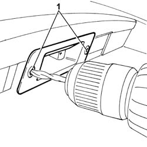
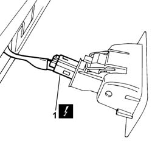
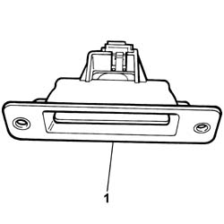
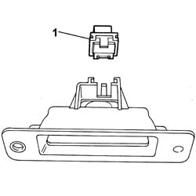

7015B60 MANIGLIA ESTERNA PER APERTURA PORTELLONE CON INTERRUTTORE PER SBLOCCAGGIO PORTELLONE - S.R.
- Path
- Procedures > 70 FITTINGS > 7015 TAILGATE/FLAP > 7015B TAILGATE LOCKING/OPENING DEVICES > 7015B60 MANIGLIA ESTERNA PER APERTURA PORTELLONE CON INTERRUTTORE PER SBLOCCAGGIO PORTELLONE - S.R.
- Kind
- repair procedure (removal / refitting; the operation number is the code)
- Applies to
- all engines; all production periods
- Interactive page
- https://sloeber94.github.io/elrnDB-fUlss/en/#/179007697
Applies to: all engines; all production periods
 Removing
Removing
 Refitting
RefittingOp. 5530B56 BATTERY DRIP TRAY COVER - R.R.
- Disconnect the negative battery terminal.
Op. 7015A66 TAILGATE LOCK COVER - R.R.
Op. 7015A04 TAILGATE INTERIOR PANEL - R+R
Op. 5540A94 L/H OR R/H NUMBER PLATE LIGHT (ONE) - R+R
1. Using a drill, remove the rivets fastening the lock to the tailgate.

Applies to: all engines; all production periods
1. Disconnect the electrical connections for the tailgate lock.

Applies to: all engines; all production periods
1. Remove the electric exterior handle for opening/closing the tailgate, including the opening/closing switch.

Applies to: all engines; all production periods
1. At the bench, release the tailgate opening/closing switch from the housing in the handle.

Applies to: all engines; all production periods
Refitting
Removing- Fit the tailgate opening/closing switch in the housing in the handle.
- Fit the electric exterior handle for opening/closing the tailgate.
- Connect the electrical connection for the tailgate lock.
- Fasten the electrical exterior handle to the tailgate using rivets.
- Remove the protection place on the tailgate to prevent the paintwork from being damaged.
Op. 5540A94 L/H OR R/H NUMBER PLATE LIGHT (ONE) - R+R
Op. 7015A04 TAILGATE INTERIOR PANEL - R+R
Op. 7015A66 TAILGATE LOCK COVER - R.R.
- Connect the negative battery terminal.